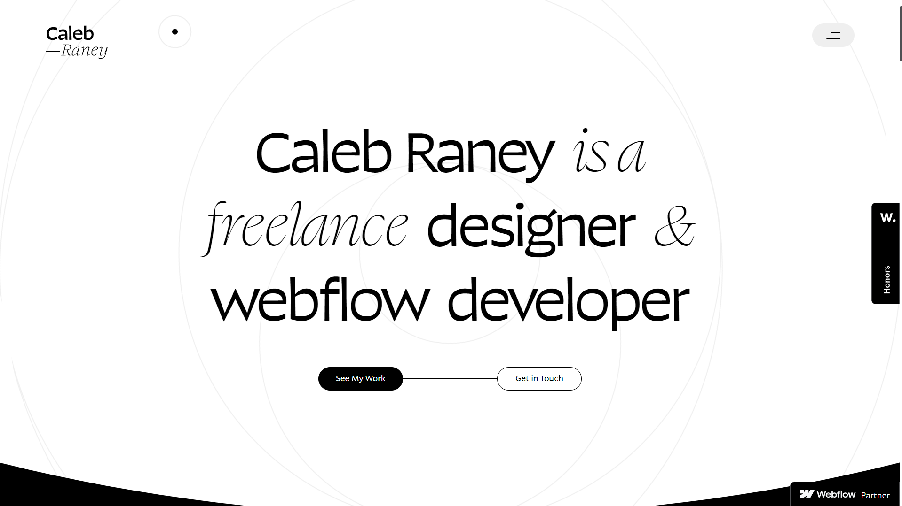
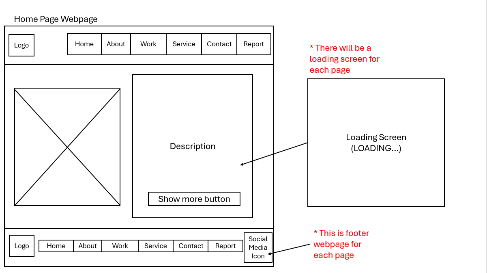
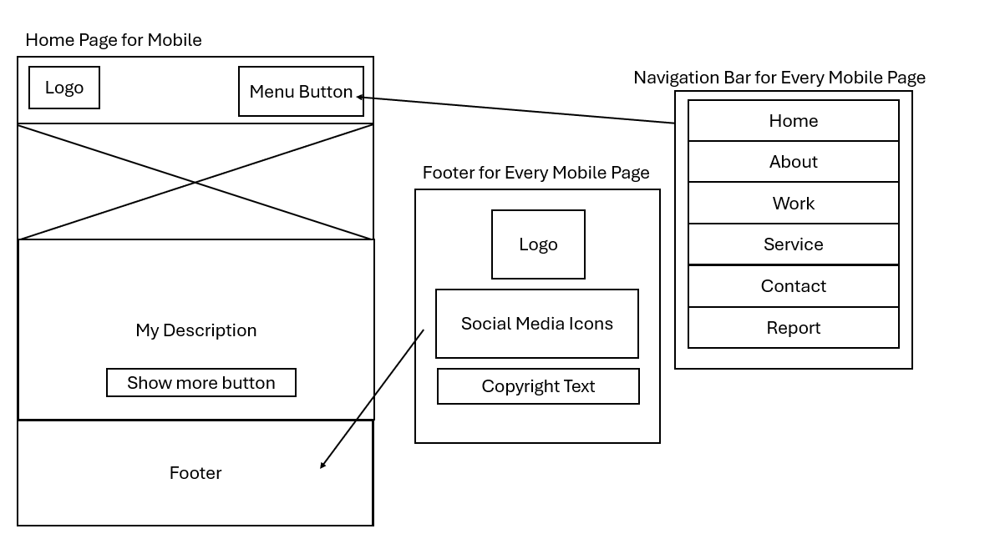
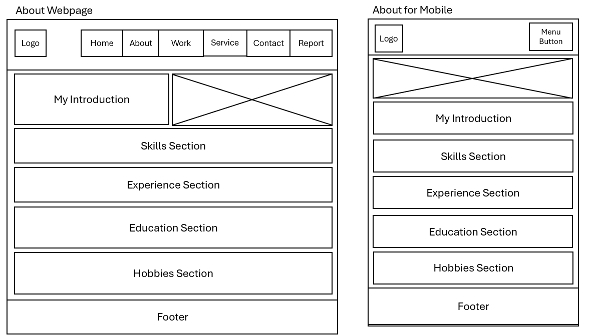
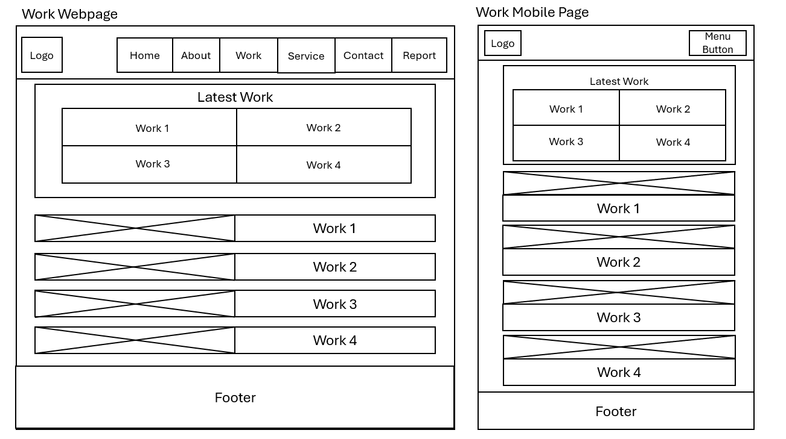
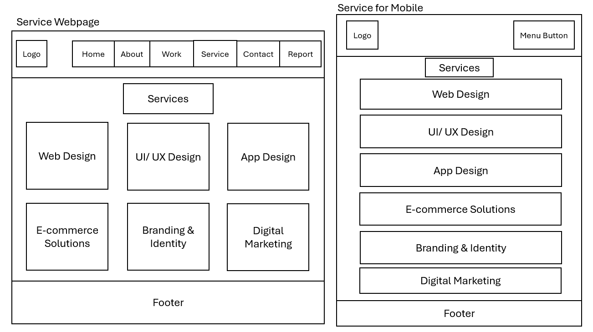
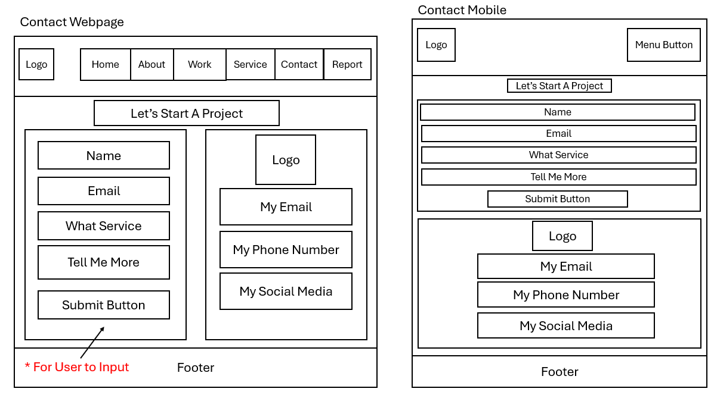

Full Name: WONG WEI SHENG
Name: Web Development
Code: CM1040
Student ID: 230655821
Date: 9 September 2024
My portfolio website tells the story of my journey from a basketball coach to a UX Designer. I begin with my
early experiences from teaching basketball in school, where I developed essential skills in teamwork and
strategy.
During teaching basketball, I discovered a passion for user experience during my Computer
Science studies, and pursued through formal education in UI/UX Design. My portfolio website basically
addresses
to find the potential clients and collaborators. The structure of the website is designed to guide the user
through my story by starting the homepage followed by about me page, work
page, service page and contact page. In the about me page, I introduce myself and also listed my skills and
hobbies to give the user a better understanding of me. On the work page and service page to attract the
clients and collaborators, I show them some of my works in different company that I worked with and the
services that I provide in the Work Page and Service. Last of all, the contact page is for the clients and
collaborators to contact me for any inquiries or collaborations.

1.Agustin Burgos : https://agustinburgos.com/
Agustin Burgos is a UX Designer and Front-End Developer. I learned from his website that the design of the website is with a lot of animation such as scrolling animation, hover animation and also the design of the website is very clean and simple. The website also has a nice layout which makes the website looks clean and neat. The website also has a lot of images and videos which makes the website looks more attractive and interesting.

2.Colin Moy : https://colin-moy.webflow.io/
Colin Moy is a UX Designer and Front-End Developer. I learned from his website that the design of the website is the way he design to let the webwebsite can be switch within normal mode and dark mode. Other than that, when the user moving the cursor the animation will be triggered. The website also has a lot of images and videos which makes the website looks more attractive and interesting.

3.Caleb Raney : https://www.calebraney.com/
Caleb Raney is a freelance designer and webflow developer. I learned from his website that the design of the website is with the combination of black and white colour. When the user scroll the cursor, the background will change colour from white to black or black to white. I think this is very creative and able to attract user. Then, his website also user-friendly and easy to navigate.
1. Screen Compatibility : My website is designed to be fully responsive and adapts to all screen sizes, whether on mobile phones, tablets, desktops, or other devices. This ensures that the website looks good and functions properly on each device.
2. Color Contrast : High contrast colors are used for the background and text to assist users with low vision, making the text easily readable against the background.
3. Provide Clear Instructions : The website provides clear and straightforward instructions to guide users. For example, the navigation bar is designed to be user-friendly with clearly labeled menu items that represent each page of the website.
1. Clear Navigation : I implemented a straightforward navigation bar to help users find information quickly and easily.
2. Mobile Responsiveness : I ensured that the website is responsive and performs well on different devices.
3. Error Handling : The contact page is designed with error messages and suggestions for correcting user input. For example, if a user inputs incorrect information, such as an invalid email address, an error message will appear immediately to help the user identify and correct the mistake.
1. Responsive Web Design: I learned how to create a website that adapts to different screen sizes and devices to ensure a good user experience. To achieve this, I used media queries in CSS to adjust the layout and styling of different pages based on the device's screen size.
2. JavaScript for Interaction: I learned how to add interactive elements using JavaScript. I had included a contact form on my website that uses JavaScript to validate user input and provide feedback.Other than that, the preloader is also created using JavaScript to show the loading screen before the page is shown.
3. User Experience Design: I learned how to design a user-friendly interface and applied principles from design portfolios. To refine my design, I used tools like wireframes to visualize and improve the user experience.
1. The responsiveness of my webpage is a key success. It performs well across various devices and screen sizes, ensuring a positive user experience.
2. The variety of projects showcased on my webpage highlights the different skills I have acquired. This diverse portfolio attracts users by demonstrating my versatility and expertise.
3. Consistency across platforms. For example, I have included buttons linking to my social media profiles to make it easier for users to connect with me for potential collaborations.
1. Enhancing the visual design : In order to make my website more visually appealing and engaging, I may add more creative elements such as more animations, to improve its visual design.
2. Implementing Dark Mode : In order to improve user experience, instead of having a dark background for my design, I might incorporate a feature that allows users to switch to dark mode.
3. Adding more interactive elements : I could create some interactive components, like a live chat feature, that would allow users to ask whatever questions they might have.
1. Bootstrap 5.3.3 - Used to build responsive designs and layouts for websites, including grid layouts.
2. Font Awesome - Used to add icons to the website such as Facebook Icon and Linkedin Icon.
3. Google Fonts - Used to add custom fonts to the website such as change font family to "New Amsterdam".
Wireframes for My Portfolio Website





